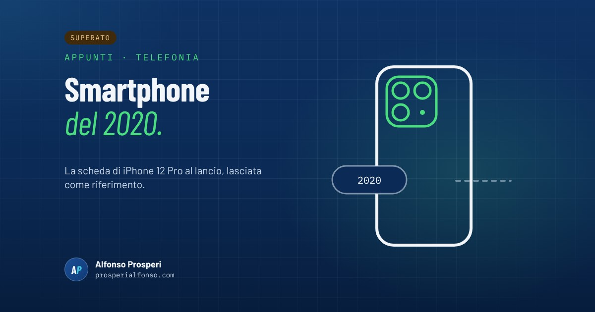

Questo articolo presentava iPhone 12 Pro al suo arrivo in Italia, nell'autunno 2020. Lo lasciamo come riferimento.
Le sue principali caratteristiche al lancio erano:
- Design: scocca in acciaio, retro in vetro satinato e protezione frontale con rivestimento in cristalli di ceramica. Resistenza ad acqua e polvere secondo lo standard IP68.
- Processore A14 Bionic a 6 core con GPU a 4 core, 6 GB di RAM e memoria da 128, 256 o 512 GB, non espandibile.
- Connettività 5G, con una modalità automatica che passa al 4G quando il 5G non serve. Supporto a SIM fisica ed eSIM. Niente jack audio da 3,5 millimetri e connettore Lightning.
- Fotocamera: modulo con tre obiettivi da 12 megapixel e modalità notte anche sul grandangolo e nei ritratti.
- Video in 4K a 60 fps anche in HDR.
- Display OLED da 6,1 pollici, risoluzione 1170 x 2532 pixel.
- Batteria da 2.815 mAh, un po' più piccola rispetto al modello precedente.
All'epoca era il top di gamma di Apple, un telefono eccellente ma per pochi, considerato il prezzo.